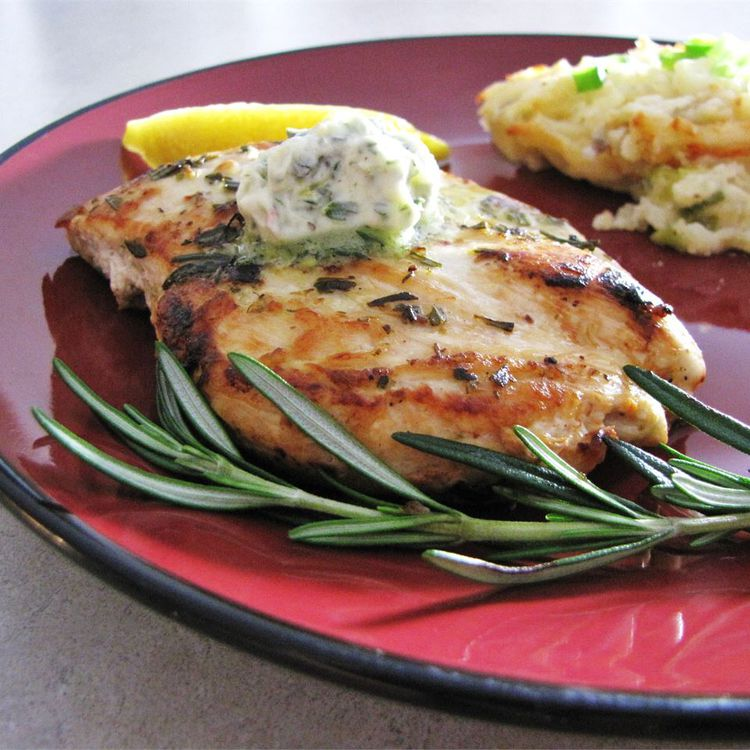

Description
This simple, sensational marinade and sauce for grilled
chicken is made with lemon, garlic, rosemary, and butter.
Separate the marinade into thirds: 1/3 for marinating, 1/3 for basting,
and 1/3 for topping.
Ingredients
½ cup butter
½ cup fresh rosemary
3 cloves garlic
1 lemon (zested)
¼ cup fresh lemon juice
6 ounce skinless boneless chicken breast (halves)
salt and pepper to taste
Steps
-
In a food processor, blend butter, rosemary, garlic, lemon zest, and
lemon juice together. Pour 1/3 of the blended mixture into a small bowl
for marinade. Cover remaining mixture, and set aside.
-
Lightly season chicken breasts with salt and pepper. Rub chicken breasts
with marinade. Place chicken breasts on a platter, cover, and
refrigerate for 3 hours.
-
Preheat an outdoor grill for high heat and lightly oil the grate.
Transfer half of the reserved rosemary and lemon mixture into a bowl for
basting. Cover remaining mixture, and set aside for topping cooked
chicken.
-
Cook chicken breasts on hot grill, basting with rosemary and lemon
basting mixture, about 4 minutes per side. An instant-read thermometer
inserted into the center should read at least 165ºF (74ºC). Remove
chicken breasts from the grill, and top with remaining rosemary and
lemon mixture.